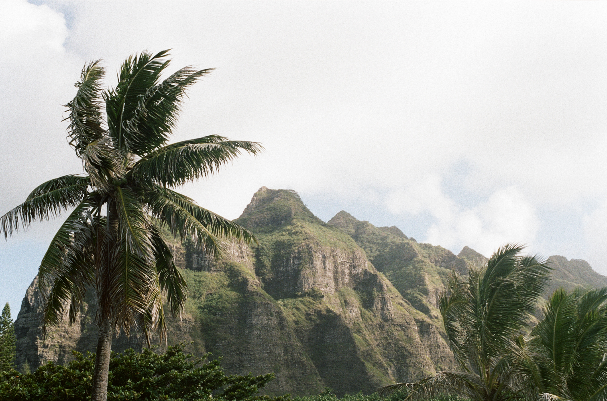
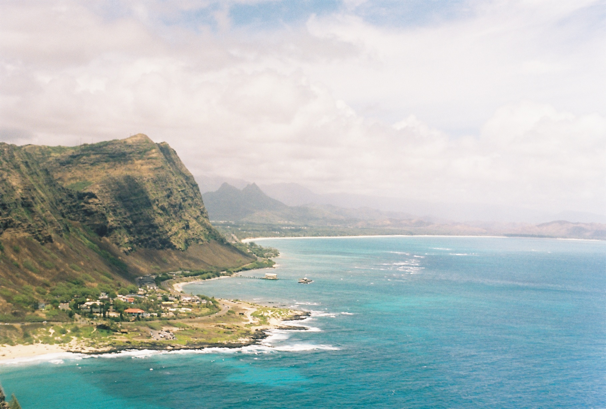

1
Mitsuwa
1450 Ala Moana Blvd # 1360, Honolulu, HI 96814
I wandered into Mitsuwa Marketplace during a frantic search for a public restroom and quickly fell in love. There are lots of great (asian) grocery items and fresh seafood items. Sushi, poke, bentos, beef bowls, spam musubi... it’s all here. There’s a small eating area in the back with food stations available serving matcha ice-cream, ramen, etc. Prices are reasonable for Waikiki, and its located right across from the beach (the second floor of the International Marketplace) which is a big plus.I am a huge fan of salmon and ahi tuna poke, and they make it exceptionally well here. Mitsuwa quickly became my regular stop for a light lunch of poke and seaweed salad during long days at the beach. However, I came in at 8:30pm once (they close at 10pm) and quickly realized that that is the best time to be there...
most of the food items get marked half off at 8:30pm!

2
Shirokiya Village Walk
1450 Ala Moana Blvd # 1360, Honolulu, HI 96814

If you love Japanese food, then you must go here! They have everything! Ramen, Udon, Takoyaki, Sushi, Teriyaki, okonomiyaki, katsu, dumplings etc. You name it. We were pleasantly surprised to find this place. It has 56 Japanese vendors all in one spot. We tried And what most that we liked is that foods are decent price! Plus $1 beer??? What else can you ask for. Five service counters with $1 beers, other draft selections, wine, sake, and shochu. and $4 pitchers~~~ Everyday I was there I got beef (gyukotsu) ramen at Kamitoku Ramen and it was some of the best I’ve ever had. I also went through a pitcher of beer and then purchase fried things and noodley things and forgot what all I ate. Everything was delicious and worth it. I heard seats can get hard to get sometimes, I visted them around dinner and after dinner time basically every day of the week and had no problem at all.
$1 beer! yes! $4 pitchers! yes please!

3
Marukame Udon
2310 Kuhio Ave #124, Honolulu, HI 96815
Well worth the wait. Although the line wrapping around the block looks discouraging, it moves rather quickly. As you get in, you grab a tray and they prepare your udon instantly, cafeteria style! Then you proceed to get your tempura selections. People tend to eat and leave so we really didn’t have to wait for a table either. Udon is a quick meal as well so it doesn’t take too long to consume, minimizing any potential wait time for a table. I had the Ontama Bukkake Udon and my boyfriend had the Kamaage Udon and we were both very satisfied!